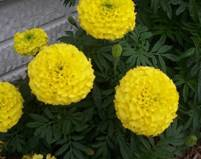

HORT 281 :: Lecture 40 :: MARIGOLD

Scientific Name: Tagetes spp.
Hindi Name: Gainda
Season in which crop is grown
Marigold can be grown three times in a year – rainy, winter and summer seasons. The season of sowing and transplanting of seedlings for obtaining flower at different seasons of the year are given below:
Flowering season |
Sowing Time |
Transplanting time |
Late rains |
Mid June |
Mid July |
Winter |
Mid September |
Mid October |
Summer |
January-February |
February-March |
Origin and History
Marigold is native of Central and South America, especially Mexico. From Mexico it spread to different parts of the world during early part of the 16th century. The name Tagetes was given after Tages, a demigod, known for his beauty. African marigold was first introduced into Spain early in the 16th century and became popular in Southern Europe. Another well known type of marigold i.e. French marigold (T. patula) followed a similar route from Mexico to that of African type.
Uses/Nutrient Value
Marigold is grown as an ornamental crop for loose flowers as well as a source of pigment for poultry feed. Flowers are sold in the market as loose or after making into garlands. Other than loose flower, it can also be used as cut flower. Marigold is used especially for beautification and also in landscape plans due to its variable height and colour of flowers. It is highly suitable as a bedding plant purpose in herbaceous border and shrubbery. French marigold is ideal for rockeries, edging, hanging baskets and window boxes.
Leaf paste is used externally against boils and carbuncles. Leaf extract is a good remedy for ear ache. Flowers extract is considered as blood purifier, a cure for bleeding piles and is also a good remedy for eye disease and ulcers. The essential oil present in different species of Tagetes can find use in the perfume industry.
Area & Distribution
Cultivation tends to be located close to big cities like Mumbai, Pune, Bangalore, Mysore, Chennai, Calcutta and Delhi. The estimated area on which flowers are grown in India is about 1,10,000 hectares. Major growing states are Karnataka, Tamil Nadu, West Bengal, Andhra Pradesh and Maharashtra. Traditional flowers, including marigolds, occupy nearly two thirds of this area. In northern India in Himachal Pradesh, small scale farmers are growing marigold and other flower crops for garlands and decoration.
Botanical Description
Tagetes erecta (African marigold)
The African marigold plant is hardy, annual; about 90 cm tall erect and branched. Leaves are pinnately divided and leaflets are lanceolate and serrated. Flowers are single to fully double with large globular heads. The florets are either 2-lipped or quilled. Flower colour varies from lemon yellow to yellow, golden yellow or orange.
Tagetes Patula (French marigold)
The French marigold is a hardy annual, about 30 cm tall, forming a bushy plant. Foliage is dark green with reddish stem. Leaves are pinnately divided and leaflets are linear lanceolate and serrated. Flowers are small, either single or double borne on proportionately long peduncles. The flower colour varies from yellow to mahogany red.
Climatic Requirement
Marigold requires mild climate for luxuriant growth and flowering. Mild climate during growing period (14.5°-28.6°C) greatly improves flowering while higher temperature (26.2°-36.4°C) adversely affects flower production.
Soil Requirement
Marigold is adaptable to different types of soil conditions and thus can grown successfully in a wide variety of soils. However, a deep, fertile, friable soil having good water holding capacity, well drained and near to neutral in reaction (pH 7.0 – 7.5) is most desirable. An ideal soil for marigold cultivation is fertile and sandy loam.
Varieties
Tagetes erecta (African marigold)
Giant Double African Orange, Giant Double African Yellow, Crackerjack, Climax, Doubloon, Golden Age, Chrysanthemum Charm, Crown of Gold, Spun Gold.
Tagetes patula (French marigold)
Red Brocade, Rusty Red, Butter Scotch, Valencia, Succana.
Tagetes tenuifolia
Golden Gem, Lulu, Pumila, Ursula. However, in the market mostly orange coloured varieties are preferred.

Field Preparation and Sowing
Preparation of Field
Nursery beds are thoroughly prepared by digging and incorporating well rotten FYM. Before sowing the seeds, Malathion dust should be dusted on outer side of nursery beds to avoid ants.
Planting Material and Propogation
Marigold is mainly propagated by seeds, besides; it can also propagated by cuttings. Crop raised from seeds is tall, vigorous and heavy bloomer.
For raising seedling for one hectare, about 1.0 kg seed is required. For raising seedlings seeds can be sown in pots, seed boxes or on flat or raised nursery beds.
Seeds should be sown thinly and be covered with light soil or sand or sieved leaf mould and watering should be done by fine nose. For cutting method, 6-10 cm long cuttings are made from the apical portion of the shoot and treated with root promoting hormones like IAA and IBA. Cuttings planted in sand or vermiculite root easily and rooted cutting are transferred in bed or pots for flowering.
Time of Transplanting
Mid July, mid October and February-March are suitable time for transplanting. At the time of transplanting they should of 7 to 10 cm height and bear 3-4 true leaves. Transplanting should be done in well prepared land in the evening hours.
Spacing
Tagetes erecta require 40 × 30 cm spacing while T. patula require 20 × 20 cm or 20 × 10 cm spacing for high yield.
Nutrient Management
FYM is given @ 50 tones/ha at the time of field preparation. In African and French marigold application of 400 kg N, 200 kg P and 60 kg K per hectare should be done.
Nitrogen should be given two or three time during growth period.
Water and Irrigation Management
The frequency and quantity of water mainly depends upon factors like soil and season. In lighter soil, more frequent irrigation is required than heavy soil. Weekly irrigation is necessary from September-March in sandy loam soil. During summer months from April to June, frequent irrigation at an interval of 4-5 days is required.
Weed Management
In marigold production, control of weeds is an important operation. In India, 3-4 manual weeding are required for entire period. Chemical weed control is also recommended.
Pest Management
Red spider mite (Tetranychus sp.)
These mites sometime appear on the plant near flowering time. Plants give dusty appearance. It can be controlled by spraying Metasystox 25 E C, or Rogor or Nuvacron 40 E C or Kethone @ 1 ml/l of water.
Hairy caterpillar (Diacrisia oblique)
This caterpillar eats away foliage. This caterpillar can be controlled by Nuvan or Thiodan at 1 ml/l of water.
Disease Management
Fungal diseases
Damping off
It is caused by Rhizoctonia solani and appears as brown necrotic spots girdling the radicle, later on extends to plumule and pre-emergence mortality. When infected seedlings are pulled, the root system appears fully or partially decayed. Seeds should be treated with Captan @ 3 g or Carbendazim @ 2.5 g per kilogram of seeds before sowing.
Collar rot
It is caused by a number of pathogens and common ones are Phytophtora sp. Rhizoctonia solani, Pythium sp. Collar rot is caused either in nursery or in grown-up plants. It can be prevented by soil sterilization or by using healthy seedlings.
Flower bud rot
It is caused by Alternaria dianthi. The disease mainly appears on young flower buds and results in dry rotting of buds. Symptoms are less prominent on mature buds but these buds fail to open. To control this disease regular spraying of the crop with Dithane M- 45 @ 0.2% should be followed.
Powdery mildew
Oidium sp. causes powdery mildew in marigold. Whitish, tiny, superficial spots appear on leaves, later on the whole aerial parts of the plant is covered with whitish powder. The disease can be controlled by spraying with Karathane (40 E C) @ 0.5% or dusting with sulphur powder at fortnightly intervals.
Plucking-Harvesting
Harvesting
Marigold flowers are plucked when they have attained full size. Plucking of flowers should be done in cool hours of the day. The field should be irrigated before plucking so that flowers keep well for a longer period after harvest. Plucked flowers are collected in polythene bags or bamboo baskets for carrying to markets.
Yield
The yield of flowers in African and French marigold not only varies with cultivar but also cultural practices including planting, spacing and fertilization showed a marked variation in flower number from 6 to 8 millions and from 1.5 to 2.5 millions per hectare, in French and African marigold, respectively, the corresponding ranges of variation in the weight of flowers were 8 to 12 tonnes/ha in French marigold and 11 to 18 tonnes/ha in African marigold.
Post Harvesting
Postharvest processing, grading, packing and storage
After harvesting the flowers they are dried on floor under shade for 2-3 days. Upon drying, the seeds are separated by hammering the flowers and the flower straw is separated out by winnowing of the hammered flowers. The seeds are thoroughly cleaned and graded before packing in poly bags or cloths bags, and are stored in cool places. The moisture contents of the seeds must be examined before the packing.
Extraction of Oil and Quality Control
All parts of Tagetes patula contain essential oil, which can readily be extracted by steam distillation. The oil has a pronounced odour and acts as a repellent to flies. It has been reported that I-limonene, ocimene, I-linalyl acetate and I-linalool have been extracted from Tagetes erecta. While evaluating the different species for essential oil contents, T. signata contained higher essential oil (4.25 of dry matter) of very good quality which can be used in perfume industry.
Marketing, Distribution and Transportation
Crop has a good demand in decoration, garlands, loose flower and religious function etc. So can be marketed to major/ big cities where these can be supplied to hotels, institutions, etc. For garlands distribution distributed to the market flower should be packed in bamboo basket which should be covered under moist muslin cloth.
Pinching
Apical portion of shoot if removed early, a large number of axillary shoots arise resulting in well shaped bushy plants bearing more number of uniform flowers. The removal of shoot apices 40 days after transplanting enhances the flower yield.
Important tips and best practices for crop cultivation
- Always use disease free planting material
- Timely weed management should be done.
- Flower should be harvested at proper time and stage.
These are distributed to the market in bamboo basket which should be covered under moist muslin cloth.
Alternative Uses of Produce or Value Addition
Loose flower, cut flower, perfumery industry, bedding purpose, medicinal and cosmetic industry, colour making, garland, decoration etc.

*******
1. Mention the season of cultivation
2. Differentiate African and French marigold
3. What are the propagation methods
4. Biochemical constituents of essential oil
5. What is pinching
| Download this lecture as PDF here |